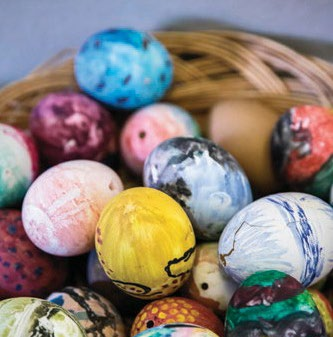
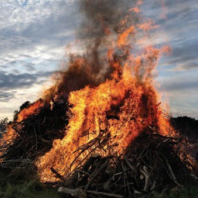
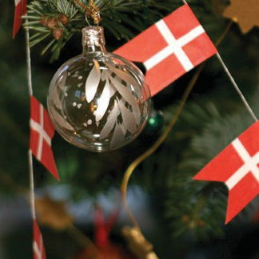

6.10 – SKIKKE OG MÆRKEDAGE
sidde 218
I Danmark fejrer man i løbet af året en række helligdage, mærkedage og særlige skikke. På mange af disse dage har børnene fri fra skole, og de voksne har fri fra arbejde. Danmark er i øvrigt et af de eneste lande i verden, som ikke har en egentlig officiel nationaldag.
Fastelavn
Fastelavn er et andet ord for karneval. Det er en forårsfest, der kan spores tilbage til oldtidens Romerrige og Ægypten. Fastelavn i Danmark var oprinde ligt indgangen til fastetiden inden for den kristne tro. Efter gammel skik klæder børnene sig ud og slår til en tønde. I gamle dage var der en levende kat i tønden, og den, der slår tønden i stykker, kaldes stadig for kattedronning eller katte konge. I dag er der slik og frugt i tønden. Fastelavn ligger syv uger før påske.
Påske
Den kristne påske markerer, at Jesus blev korsfæstet, døde og opstod fra de døde. I Danmark bruges påsken ofte til familiefester. Fra gammel tid er der tradition for, at man giver hinanden påskeæg. Ægget er et gammelt frugt barhedssymbol. I dag er påskeæg ofte lavet af chokolade. Desuden er der tradi tion for, at man spiser lam, da lammet symboliserer påskens budskab om, at Jesus blev ofret som et uskyldigt lam for menneskets synder. Påsken ligger hvert år i marts eller april.Påskeæg.
1. Maj
Arbejderbevægelsens internationale kampdag fejres med optog, politiske taler og arrangementer over hele landet. Både fagbevægelsen og de partier som udspringer af fagbevægelsen – Socialdemokratiet, SF og Enhedslisten – står bag disse arrangementer.
Læremateriale Til Indfødsretsprøven

sidde 219
Pinse
Med den kristne pinse fejrer man, at Helligånden ifølge Biblen er kommet til jorden. Pinsen var oprindeligt afslutningen på syv ugers glædesfest efter påsken. I pinsen har nogle den tradition at stå tidligt op for at se solen ”danse” samt at holde pinsefrokost, for eksempel ved at have en madkurv med i skoven. Pinsen ligger hvert år i maj eller juni – syv uger efter påske.
Grundlovsdag
Den 5. juni er grundlovsdag, hvor man mødes og i taler fejrer Danmarks demokratiske forfatning, Danmarks Riges Grundlov. Danmark fik sin første grundlov i 1849.
Sankthans
Den 23. juni om aftenen fejres sankt hans. Baggrunden for at fejre sankt hansaften er en blanding af hedensk folketradition og kristendom. Festen markerer midsommeren, og efter gammel skik brændes bål. Navnet Hans er en forkortelse af Johannes, og sankthans er i kirkelig sammenhæng en markering af Johannes Døberens fødselsdag den 24. juni.Sankthansbål.
Julen
Til jul fejres Jesu fødsel. Juleaften er den 24. december, hvor familierne samles, spiser sammen og giver hinanden gaver. De fleste danser om juletræet og synger julesalmer. Mange går også i kirke til julegudstjeneste. Julen har således også både rødder i kristendommen og i hedensk folketradi tion med markering af vintersolhvervet, hvor dagslængden er kortest, og vi derfra går mod lysere tider. Den 25. og 26. december kaldes 1. og 2. juledag. Her samles mange familier til julefrokost.Julepynt.
Læremateriale Til Indfødsretsprøven


sidde 220
Nytår
Nytårsaften, 31. december, er årets sidste dag. Der holdes typisk fester og bliver skudt fyrværkeri af over hele landet. Nytårsdag, 1. januar, holder langt de fleste arbejdspladser og butikker lukket.
Andre Højtider Og Mærkedage
Den øgede kulturelle udveksling i verden har også bragt en række andre skikke og mærkedage til Danmark. Nogle af dem skyldes, at der er kommet flere danskere med udenlandsk baggrund. Den muslimske fastemåned rama danen bliver markeret i Danmark. Det samme gør Offerfesten Eid al-adha, som markerer afslutningen på de årlige pilgrimsrejser til Mekka, og er en af de vigtigste islamiske højtider.
Den vigtigste helligdag i det jødiske år er Yom Kippur (forsonings-dagen), som benyttes til en personlig åndelig renselse, hvor man får mulighed for at lægge eventuelt gammelt fjendskab væk og bede om tilgivelse samt angre sine synder og gøre bod gennem bøn og faste.
Ligeledes fejrer nogle halloween den 31. oktober som i USA. Børnene klæder sig ud som hekse, spøgelser eller lignende, og man laver lygter af udhulede græskar. Flere steder i landet fejres desuden karneval efter sydamerikansk forbillede med udklædning, sambamusik og optog. Det største karneval afholdes i pinsen i København.
Læremateriale Til Indfødsretsprøven
Fonte: Læremateriale til Indfødsretsprøven, SIRI.